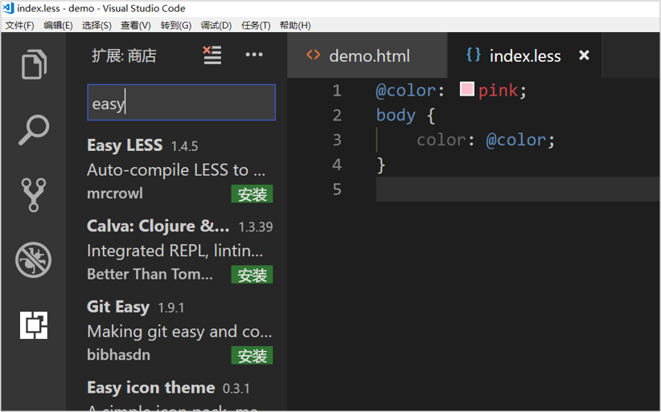

一、流式布局
1.1 移动端基础
1.1.1 浏览器现状
PC端常见浏览器：360浏览器、谷歌浏览器、火狐浏览器、QQ浏览器、百度浏览器、搜狗浏览器、IE浏览器。
移动端常见浏览器：UC浏览器，QQ浏览器，欧朋浏览器，百度手机浏览器，360安全浏览器，谷歌浏览器，搜狗手机浏览器，猎豹浏览器，以及其他杂牌浏览器。
国内的UC和QQ，百度等手机浏览器都是根据Webkit修改过来的内核，国内尚无自主研发的内核，就像国内的手机操作系统都是基于Android修改开发的一样。
总结：兼容移动端主流浏览器，处理Webkit内核浏览器即可。
1.1.2 手机屏幕的现状
- 移动端设备屏幕尺寸非常多，碎片化严重。
- Android设备有多种分辨率：480x800, 480x854, 540x960, 720x1280，1080x1920等，还有传说中的2K，4k屏。
- 近年来iPhone的碎片化也加剧了，其设备的主要分辨率有：640x960, 640x1136, 750x1334, 1242x2208等。
- 作为开发者无需关注这些分辨率，因为我们常用的尺寸单位是 px 。
1.1.3 常见移动端屏幕尺寸
1.1.4 移动端调试方法
- Chrome DevTools（谷歌浏览器）的模拟手机调试
- 搭建本地web服务器，手机和服务器一个局域网内，通过手机访问服务器
- 使用外网服务器，直接IP或域名访问
1.2 视口
视口（viewport）就是浏览器显示页面内容的屏幕区域。 视口可以分为布局视口、视觉视口和理想视口
1.2.1 布局视口 layout viewport
一般移动设备的浏览器都默认设置了一个布局视口，用于解决早期的PC端页面在手机上显示的问题。
iOS, Android基本都将这个视口分辨率设置为 980px，所以PC上的网页大多都能在手机上呈现，只不过元素看上去很小，一般默认可以通过手动缩放网页。

1.2.2 视觉视口 visual viewport
字面意思，它是用户正在看到的网站的区域。注意：是网站的区域。
我们可以通过缩放去操作视觉视口，但不会影响布局视口，布局视口仍保持原来的宽度。

1.2.3 理想视口 ideal viewport
为了使网站在移动端有最理想的浏览和阅读宽度而设定
理想视口，对设备来讲，是最理想的视口尺寸
需要手动添写meta视口标签通知浏览器操作
meta视口标签的主要目的：布局视口的宽度应该与理想视口的宽度一致，简单理解就是设备有多宽，我们布局的视口就多宽
总结：我们开发最终会用理想视口，而理想视口就是将布局视口的宽度修改为视觉视口
1.2.4 meta标签

最标准的viewport设置
- 视口宽度和设备保持一致
- 视口的默认缩放比例1.0
- 不允许用户自行缩放
- 最大允许的缩放比例1.0
- 最小允许的缩放比例1.0
1.3 二倍图
1.3.1 物理像素&物理像素比
物理像素点指的是屏幕显示的最小颗粒，是物理真实存在的。这是厂商在出厂时就设置好了,比如苹果6 是 750* 1334
我们开发时候的1px 不是一定等于1个物理像素的
一个px的能显示的物理像素点的个数，称为物理像素比或屏幕像素比
如果把1张100*100的图片放到手机里面会按照物理像素比给我们缩放
lRetina（视网膜屏幕）是一种显示技术，可以将把更多的物理像素点压缩至一块屏幕里，从而达到更高的分辨率，并提高屏幕显示的细腻程度。
对于一张 50px * 50px 的图片,在手机或 Retina 屏中打开，按照刚才的物理像素比会放大倍数，这样会造成图片模糊
在标准的viewport设置中，使用倍图来提高图片质量，解决在高清设备中的模糊问题
通常使用二倍图， 因为iPhone 6 的影响背景图片 注意缩放问题
1.3.2 背景缩放background-size
background-size 属性规定背景图像的尺寸
background-size: 背景图片宽度 背景图片高度;单位： 长度|百分比|cover|contain;
cover把背景图像扩展至足够大，以使背景图像完全覆盖背景区域。
contain把图像图像扩展至最大尺寸，以使其宽度和高度完全适应内容区域
1.4 移动开发选择和技术解决方案
1.4.1 移动端主流方案
- 单独制作移动端页面（主流）
通常情况下，网址域名前面加 m(mobile)
可以打开移动端。通过判断设备，如果是移动设备打开，则跳到移动端页面。
也就是说，PC端和移动端为两套网站，pc端是pc端的样式，移动端在写一套，专门针对移动端适配的一套网站
京东pc端：
京东移动端：
- 响应式页面兼容移动端（其次）
响应式网站：即pc和移动端共用一套网站，只不过在不同屏幕下，样式会自动适配
1.4.2 移动端技术解决方案
1.移动端浏览器兼容问题
移动端浏览器基本以 webkit 内核为主，因此我们就考虑webkit兼容性问题。
我们可以放心使用 H5 标签和 CSS3 样式。
同时我们浏览器的私有前缀我们只需要考虑添加 webkit 即可
2.移动端公共样式
移动端 CSS 初始化推荐使用 normalize.css/，官网地址： http://necolas.github.io/normalize.css/
- Normalize.css：保护了有价值的默认值
- Normalize.css：修复了浏览器的bug
- Normalize.css：是模块化的
- Normalize.css：拥有详细的文档
1.4.3 移动端大量使用 CSS3盒子模型box-sizing
传统模式宽度计算：盒子的宽度 = CSS中设置的width + border + padding
CSS3盒子模型：盒子的宽度= CSS中设置的宽度width 里面包含了 border 和 padding
也就是说，我们的CSS3中的盒子模型， padding 和 border 不会撑大盒子了
/*CSS3盒子模型*/
box-sizing: border-box;
/*传统盒子模型*/
box-sizing: content-box;移动端可以全部CSS3 盒子模型
PC端如果完全需要兼容，我们就用传统模式，如果不考虑兼容性，我们就选择 CSS3 盒子模型
1.4.4 移动端特殊样式
/*CSS3盒子模型*/
box-sizing: border-box;
-webkit-box-sizing: border-box;
/*点击高亮我们需要清除清除 设置为transparent 完成透明*/
-webkit-tap-highlight-color: transparent;
/*在移动端浏览器默认的外观在iOS上加上这个属性才能给按钮和输入框自定义样式*/
-webkit-appearance: none;
/*禁用长按页面时的弹出菜单*/
img,a { -webkit-touch-callout: none; }1.5 移动端常见布局
移动端单独制作
- 流式布局（百分比布局）
- flex 弹性布局（强烈推荐）
- less+rem+媒体查询布局
- 混合布局
响应式
- 媒体查询
- bootstarp
流式布局：
流式布局，就是百分比布局，也称非固定像素布局。
通过盒子的宽度设置成百分比来根据屏幕的宽度来进行伸缩，不受固定像素的限制，内容向两侧填充。
流式布局方式是移动web开发使用的比较常见的布局方式。
二、flex布局
2.1 传统布局和flex布局对比
2.1.1 传统布局
- 兼容性好
- 布局繁琐
- 局限性，不能再移动端很好的布局
2.1.2 flex布局
- 操作方便，布局极其简单，移动端使用比较广泛
- pc端浏览器支持情况比较差
- IE11或更低版本不支持flex或仅支持部分
2.1.3 建议
- 如果是pc端页面布局，还是采用传统方式
- 如果是移动端或者是不考虑兼容的pc则采用flex
2.2 flex布局原理
- flex 是 flexible Box 的缩写，意为”弹性布局”，用来为盒状模型提供最大的灵活性，任何一个容器都可以指定为 flex 布局。
- 当我们为父盒子设为 flex 布局以后，子元素的 float、clear 和 vertical-align 属性将失效。
- flex布局又叫伸缩布局 、弹性布局 、伸缩盒布局 、弹性盒布局
- 采用 Flex 布局的元素，称为 Flex 容器（flex container），简称”容器”。它的所有子元素自动成为容器成员，称为 Flex 项目（flex item），简称”项目”。
总结：就是通过给父盒子添加flex属性，来控制子盒子的位置和排列方式
2.3 父项常见属性
- flex-direction：设置主轴的方向
- justify-content：设置主轴上的子元素排列方式
- flex-wrap：设置子元素是否换行
- align-content：设置侧轴上的子元素的排列方式（多行）
- align-items：设置侧轴上的子元素排列方式（单行）
- flex-flow：复合属性，相当于同时设置了 flex-direction 和 flex-wrap
2.3.1 flex-direction设置主轴的方向
- 在 flex 布局中，是分为主轴和侧轴两个方向，同样的叫法有 ： 行和列、x 轴和y 轴
- 默认主轴方向就是 x 轴方向，水平向右
- 默认侧轴方向就是 y 轴方向，水平向下
注意： 主轴和侧轴是会变化的，就看 flex-direction 设置谁为主轴，剩下的就是侧轴。而我们的子元素是跟着主轴来排列的

2.3.2 justify-content 设置主轴上的子元素排列方式

2.3.3 flex-wrap设置是否换行
- 默认情况下，项目都排在一条线（又称”轴线”）上。flex-wrap属性定义，flex布局中默认是不换行的。
- nowrap 不换行
- wrap 换行
2.3.4 align-items 设置侧轴上的子元素排列方式（单行 ）
- 该属性是控制子项在侧轴（默认是y轴）上的排列方式 在子项为单项（单行）的时候使用
- flex-start 从头部开始
- flex-end 从尾部开始
- center 居中显示
- stretch 拉伸
2.3.5 align-content 设置侧轴上的子元素的排列方式（多行）
设置子项在侧轴上的排列方式 并且只能用于子项出现 换行 的情况（多行），在单行下是没有效果的。
2.3.6 align-content 和align-items区别
- align-items 适用于单行情况下， 只有上对齐、下对齐、居中和 拉伸
- align-content适应于换行（多行）的情况下（单行情况下无效）， 可以设置 上对齐、下对齐、居中、拉伸以及平均分配剩余空间等属性值。
- 总结就是单行找align-items 多行找 align-content
2.3.7 flex-flow 属性是 flex-direction 和 flex-wrap 属性的复合属性
flex-flow:row wrap;2.4 flex布局子项常见属性
- flex子项目占的份数
- align-self控制子项自己在侧轴的排列方式
- order属性定义子项的排列顺序（前后顺序）
2.4.1 flex 属性
flex 属性定义子项目分配剩余空间，用flex来表示占多少份数。
.item {
flex: <number>; /* 默认值 0 */
}
2.4.2 align-self控制子项自己在侧轴上的排列方式
align-self 属性允许单个项目有与其他项目不一样的对齐方式，可覆盖 align-items 属性。
默认值为 auto，表示继承父元素的 align-items 属性，如果没有父元素，则等同于 stretch。
span:nth-child(2) {
/* 设置自己在侧轴上的排列方式 */
align-self: flex-end;
}
2.4.3 order 属性定义项目的排列顺序
数值越小，排列越靠前，默认为0。
注意：和 z-index 不一样。
.item {
order: <number>;
}2.5 携程网首页案例制作
携程网链接：http://m.ctrip.com
- 技术选型
方案：我们采取单独制作移动页面方案
技术：布局采取flex布局
- 搭建相关文件夹
- 设置视口标签以及引入初始化样式
<meta name="viewport" content="width=device-width, user-scalable=no,initial-scale=1.0, maximum-scale=1.0, minimum-scale=1.0">
<link rel="stylesheet" href="css/normalize.css">
<link rel="stylesheet" href="css/index.css">- 常用初始化样式
body {
max-width: 540px;
min-width: 320px;
margin: 0 auto;
font: normal 14px/1.5 Tahoma,"Lucida Grande",Verdana,"Microsoft Yahei",STXihei,hei;
color: #000;
background: #f2f2f2;
overflow-x: hidden;
-webkit-tap-highlight-color: transparent;
}
- 模块名字划分

三、rem布局
3.1 rem基础
3.1.1 rem单位
rem (root em)是一个相对单位，类似于em，em是父元素字体大小。
不同的是rem的基准是相对于html元素的字体大小。
比如，根元素（html）设置font-size=12px; 非根元素设置width:2rem; 则换成px表示就是24px。
/* 根html 为 12px */
html {
font-size: 12px;
}
/* 此时 div 的字体大小就是 24px */
div {
font-size: 2rem;
}rem的优势：父元素文字大小可能不一致， 但是整个页面只有一个html，可以很好来控制整个页面的元素大小。
3.2 媒体查询
3.2.1 什么是媒体查询
媒体查询（Media Query）是CSS3新语法。
- 使用 @media查询，可以针对不同的媒体类型定义不同的样式
- @media 可以针对不同的屏幕尺寸设置不同的样式
- 当你重置浏览器大小的过程中，页面也会根据浏览器的宽度和高度重新渲染页面
- 目前针对很多苹果手机、Android手机，平板等设备都用得到多媒体查询
3.2.2 媒体查询语法规范
- 用 @media开头 注意@符号
- mediatype 媒体类型
- 关键字 and not only
- media feature 媒体特性必须有小括号包含
@media mediatype and|not|only (media feature) {
CSS-Code;
}- mediatype 查询类型
将不同的终端设备划分成不同的类型，称为媒体类型

- 关键字
关键字将媒体类型或多个媒体特性连接到一起做为媒体查询的条件。
- and：可以将多个媒体特性连接到一起，相当于“且”的意思。
- not：排除某个媒体类型，相当于“非”的意思，可以省略。
- only：指定某个特定的媒体类型，可以省略。
媒体特性
每种媒体类型都具体各自不同的特性，根据不同媒体类型的媒体特性设置不同的展示风格。我们暂且了解三个。
注意他们要加小括号包含

媒体查询书写规则
注意： 为了防止混乱，媒体查询我们要按照从小到大或者从大到小的顺序来写,但是我们最喜欢的还是从小到大来写，这样代码更简洁
3.3 less 基础
3.3.1 维护css弊端
CSS 是一门非程序式语言，没有变量、函数、SCOPE（作用域）等概念。
- CSS 需要书写大量看似没有逻辑的代码，CSS 冗余度是比较高的。
- 不方便维护及扩展，不利于复用。
- CSS 没有很好的计算能力
- 非前端开发工程师来讲，往往会因为缺少 CSS 编写经验而很难写出组织良好且易于维护的 CSS 代码项目。
3.3.2 Less 介绍
Less（LeanerStyle Sheets 的缩写）是一门 CSS扩展语言，也成为CSS预处理器。
做为 CSS的一种形式的扩展，它并没有减少CSS的功能，而是在现有的CSS语法上，为CSS加入程序式语言的特性。
它在CSS 的语法基础之上，引入了变量，Mixin（混入），运算以及函数等功能，大大简化了 CSS 的编写，并且降低了 CSS的维护成本，就像它的名称所说的那样，Less可以让我们用更少的代码做更多的事情。
Less中文网址：http://lesscss.cn/
常见的CSS预处理器：Sass、Less、Stylus
一句话：Less是一门 CSS 预处理语言，它扩展了CSS的动态特性。
Less安装
①安装nodejs，可选择版本(8.0)，网址：http://nodejs.cn/download/
②检查是否安装成功，使用cmd命令（win10是window+r 打开运行输入cmd） —输入“node –v”查看版本即可
③基于nodejs在线安装Less，使用cmd命令“npm install -g less”即可
④检查是否安装成功，使用cmd命令“ lessc -v ”查看版本即可
Less 使用之变量
变量是指没有固定的值，可以改变的。因为我们CSS中的一些颜色和数值等经常使用。
@变量名:值;- 必须有@为前缀
- 不能包含特殊字符
- 不能以数字开头
- 大小写敏感
@color: pink;Less 编译 vocode Less 插件
Easy LESS 插件用来把less文件编译为css文件
安装完毕插件，重新加载下 vscode。
只要保存一下Less文件，会自动生成CSS文件。
Less 嵌套
// 将css改为less
#header .logo {
width: 300px;
}
#header {
.logo {
width: 300px;
}
}
如果遇见 （交集|伪类|伪元素选择器） ，利用&进行连接
a:hover{
color:red;
}
a{
&:hover{
color:red;
}
}Less 运算
任何数字、颜色或者变量都可以参与运算。就是Less提供了加（+）、减（-）、乘（*）、除（/）算术运算。
/*Less 里面写*/
@witdh: 10px + 5;
div {
border: @witdh solid red;
}
/*生成的css*/
div {
border: 15px solid red;
}
/*Less 甚至还可以这样 */
width: (@width + 5) * 2;
- 乘号（*）和除号（/）的写法
- 运算符中间左右有个空格隔开 1px + 5
- 对于两个不同的单位的值之间的运算，运算结果的值取第一个值的单位
- 如果两个值之间只有一个值有单位，则运算结果就取该单位
3.4 rem适配方案
1.让一些不能等比自适应的元素，达到当设备尺寸发生改变的时候，等比例适配当前设备。
2.使用媒体查询根据不同设备按比例设置html的字体大小，然后页面元素使用rem做尺寸单位，当html字体大小变化元素尺寸也会发生变化，从而达到等比缩放的适配。
技术方案：
- less+rem+媒体查询
- lflexible.js+rem
总结：
两种方案现在都存在。
方案2 更简单，现阶段大家无需了解里面的js代码。
3.4.1 rem实际开发适配方案1
①假设设计稿是750px
②假设我们把整个屏幕划分为15等份（划分标准不一可以是20份也可以是10等份）
③每一份作为html字体大小，这里就是50px
④那么在320px设备的时候，字体大小为320/15就是 21.33px
⑤用我们页面元素的大小除以不同的 html字体大小会发现他们比例还是相同的
⑥比如我们以750为标准设计稿
⑦一个100100像素的页面元素在 750屏幕下， 就是 100/ 50 转换为rem 是 2rem2rem 比例是1比1
⑧320屏幕下， html字体大小为21.33 则 2rem= 42.66px 此时宽和高都是 42.66 但是宽和高的比例还是 1比1
⑨但是已经能实现不同屏幕下 页面元素盒子等比例缩放的效果
总结：
①最后的公式：页面元素的rem值 = 页面元素值（px） / （屏幕宽度 / 划分的份数）
②屏幕宽度/划分的份数就是 htmlfont-size 的大小
③或者：页面元素的rem值 = 页面元素值（px） / html font-size 字体大小
3.5 苏宁首页
苏宁首页地址 ：苏宁首页
1、 技术选型
方案：我们采取单独制作移动页面方案
技术：布局采取rem适配布局（less + rem + 媒体查询）
设计图： 本设计图采用 750px 设计尺寸
2、搭建文件结构

3、设置视口标签以及引入初始化样式
<meta name="viewport" content="width=device-width, user-scalable=no, initial-scale=1.0, maximum-scale=1.0, minimum-scale=1.0">
<link rel="stylesheet" href="css/normalize.css">4、设置公共common.less文件
- 新建common.less 设置好最常见的屏幕尺寸，利用媒体查询设置不同的html字体大小，因为除了首页其他页面也需要
- 我们关心的尺寸有 320px、360px、375px、384px、400px、414px、424px、480px、540px、720px、750px
- 划分的份数我们定为 15等份
- 因为我们pc端也可以打开我们苏宁移动端首页，我们默认html字体大小为 50px，注意这句话写到最上面
3.6 rem 适配方案2
手机淘宝团队出的简洁高效 移动端适配库
我们再也不需要在写不同屏幕的媒体查询，因为里面js做了处理
它的原理是把当前设备划分为10等份，但是不同设备下，比例还是一致的。
我们要做的，就是确定好我们当前设备的html 文字大小就可以了
比如当前设计稿是 750px， 那么我们只需要把 html 文字大小设置为 75px(750px / 10) 就可以
里面页面元素rem值： 页面元素的px 值 / 75
剩余的，让flexible.js来去算
github地址：https://github.com/amfe/lib-flexible
总结：
因为flexible是默认将屏幕分为10等分
但是当屏幕大于750的时候希望不要再去重置html字体了
所以要自己通过媒体查询设置一下
并且要把权重提到最高
VSCode px 转换rem 插件 cssrem
因为cssrem中css自动转化为rem是参照默认插件的16转换的所以需要自己配置


四、响应式布局
4.1 响应式开发原理
4.1.1 响应式开发原理
就是使用媒体查询针对不同宽度的设备进行布局和样式的设置，从而适配不同设备的目的。
设备的划分情况：
- 小于768的为超小屏幕（手机）
- 768~992之间的为小屏设备（平板）
- 992~1200的中等屏幕（桌面显示器）
- 大于1200的宽屏设备（大桌面显示器）
4.1.2 响应式布局容器
响应式需要一个父级做为布局容器，来配合子级元素来实现变化效果。
原理就是在不同屏幕下，通过媒体查询来改变这个布局容器的大小，再改变里面子元素的排列方式和大小，从而实现不同屏幕下，看到不同的页面布局和样式变化。
父容器版心的尺寸划分
- 超小屏幕（手机，小于 768px）：设置宽度为 100%
- 小屏幕（平板，大于等于 768px）：设置宽度为 750px
- 中等屏幕（桌面显示器，大于等于 992px）：宽度设置为 970px
- 大屏幕（大桌面显示器，大于等于 1200px）：宽度设置为 1170px
但是我们也可以根据实际情况自己定义划分
4.2 bootstrap的介绍
4.2.1 Bootstrap简介
Bootstrap 来自 Twitter（推特），是目前最受欢迎的前端框架。Bootstrap 是基于HTML、CSS 和 JAVASCRIPT 的，它简洁灵活，使得 Web 开发更加快捷。
框架：顾名思义就是一套架构，它有一套比较完整的网页功能解决方案，而且控制权在框架本身，有预制样式库、组件和插件。使用者要按照框架所规定的某种规范进行开发。
4.2.2 bootstrap优点
- 标准化的html+css编码规范
- 提供了一套简洁、直观、强悍的组件
- 有自己的生态圈，不断的更新迭代
- 让开发更简单，提高了开发的效率
4.2.3 版本简介
2.x.x：停止维护,兼容性好,代码不够简洁，功能不够完善。
3.x.x：目前使用最多,稳定,但是放弃了IE6-IE7。对 IE8 支持但是界面效果不好,偏向用于开发响应式布局、移动设备优先的WEB 项目。
4.x.x：最新版，目前还不是很流行
4.2.4 bootstrap基本使用
在现阶段我们还没有接触JS相关课程，所以我们只考虑使用它的样式库。
Bootstrap 使用四步曲：
创建文件夹结构
创建 html 骨架结构
<!DOCTYPE html> <html lang="zh-CN"> <head> <meta charset="utf-8"> <meta http-equiv="X-UA-Compatible" content="IE=edge"> <meta name="viewport" content="width=device-width, initial-scale=1"> <!-- 上述3个meta标签*必须*放在最前面，任何其他内容都*必须*跟随其后！ --> <title>Bootstrap 101 Template</title> <!-- Bootstrap --> <link href="css/bootstrap.min.css" rel="stylesheet"> <!-- HTML5 shim and Respond.js for IE8 support of HTML5 elements and media queries --> <!-- WARNING: Respond.js doesn't work if you view the page via file:// --> <!--[if lt IE 9]> <script src="//cdn.bootcss.com/html5shiv/3.7.2/html5shiv.min.js"></script> <script src="//cdn.bootcss.com/respond.js/1.4.2/respond.min.js"></script> <![endif]--> </head> <body> <h1>你好，世界！</h1> <!-- jQuery (necessary for Bootstrap's JavaScript plugins) --> <script src="//cdn.bootcss.com/jquery/1.11.3/jquery.min.js"></script> <!-- Include all compiled plugins (below), or include individual files as needed --> <script src="js/bootstrap.min.js"></script> </body> </html>
引入相关样式文件
<!-- Bootstrap 核心样式--> <link rel="stylesheet" href="bootstrap/css/bootstrap.min.css">
书写内容
直接拿Bootstrap 预先定义好的样式来使用
修改Bootstrap 原来的样式，注意权重问题
学好Bootstrap 的关键在于知道它定义了哪些样式，以及这些样式能实现什么样的效果
4.2.5 bootstrap布局容器
Bootstrap 需要为页面内容和栅格系统包裹一个 .container 或者.container-fluid 容器，它提供了两个作此用处的类。
.container
- 响应式布局的容器 固定宽度
- 大屏 ( >=1200px) 宽度定为 1170px
- 中屏 ( >=992px) 宽度定为 970px
- 小屏 ( >=768px) 宽度定为 750px
- 超小屏 (100%)
.container-fluid
- 流式布局容器 百分百宽度
- 占据全部视口（viewport）的容器。
4.2.6 bootstrap栅格系统
Bootstrap提供了一套响应式、移动设备优先的流式栅格系统，随着屏幕或视口（viewport）尺寸的增加，系统会自动分为最多12列。
栅格系统用于通过一系列的行（row）与列（column）的组合来创建页面布局，你的内容就可以放入这些创建好的布局中。
- 按照不同屏幕划分为1~12 等份
- 行（row） 可以去除父容器作用15px的边距
- xs-extra small：超小； sm-small：小； md-medium：中等； lg-large：大；
- 列（column）大于 12，多余的“列（column）”所在的元素将被作为一个整体另起一行排列
- 每一列默认有左右15像素的 padding
- 可以同时为一列指定多个设备的类名，以便划分不同份数 例如 class=”col-md-4 col-sm-6”
栅格嵌套
栅格系统内置的栅格系统将内容再次嵌套。简单理解就是一个列内再分成若干份小列。我们可以通过添加一个新的 .row 元素和一系列 .col-sm-* 元素到已经存在的 .col-sm-*
元素内。
<!-- 列嵌套 -->
<div class="col-sm-4">
<div class="row">
<div class="col-sm-6">小列</div>
<div class="col-sm-6">小列</div>
</div>
</div>
列偏移
使用 .col-md-offset-* 类可以将列向右侧偏移。这些类实际是通过使用 * 选择器为当前元素增加了左侧的边距（margin）。
<!-- 列偏移 -->
<div class="row">
<div class="col-lg-4">1</div>
<div class="col-lg-4 col-lg-offset-4">2</div>
</div>
列排序
通过使用 .col-md-push-* 和 .col-md-pull-* 类就可以很容易的改变列（column）的顺序。
<!-- 列排序 -->
<div class="row">
<div class="col-lg-4 col-lg-push-8">左侧</div>
<div class="col-lg-8 col-lg-pull-4">右侧</div>
</div>
响应式工具
为了加快对移动设备友好的页面开发工作，利用媒体查询功能，并使用这些工具类可以方便的针对不同设备展示或隐藏页面内容。

4.3 阿里百秀案例制作
4.3.1 技术选型
方案：我们采取响应式页面开发方案
技术：bootstrap框架
设计图： 本设计图采用 1280px 设计尺寸
项目结构搭建
Bootstrap 使用四步曲：
- 创建文件夹结构
- 创建 html 骨架结构
- 引入相关样式文件
- 书写内容
container宽度修改
因为本效果图采取 1280的宽度， 而Bootstrap 里面 container宽度 最大为 1170px，因此我们需要手动改下container宽度
/* 利用媒体查询修改 container宽度适合效果图宽度 */
@media (min-width: 1280px) {
.container {
width: 1280px;
}
}